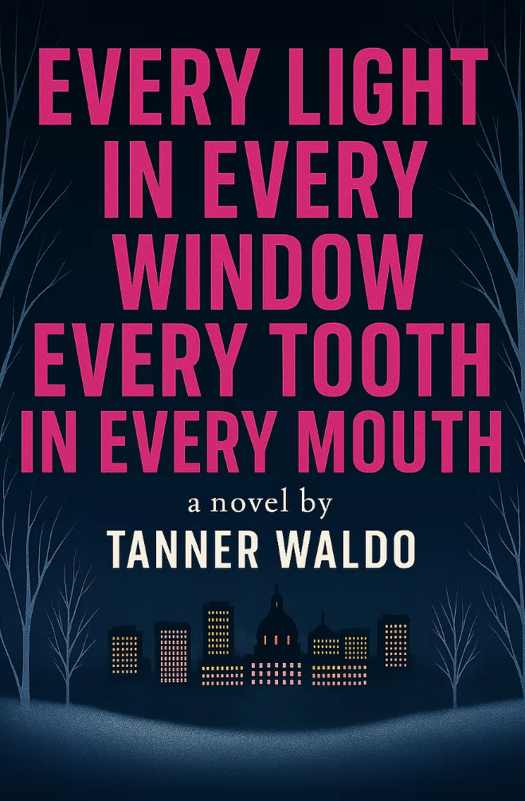

Featured Book

Set in Edmonton as winter’s teeth sink in, Tanner Waldo’s debut novel explores grief, memory, and emotional inheritance in a city that no longer feels like what it was. People drift through it—tired, uncertain, hoping something will change but unsure if it ever really does.
Julian walks that city like a half-remembered dream. His tumour is back, his relationships are frayed, and every street seems to echo with what he’s lost.
Lena serves coffee to strangers while grieving a man she wasn’t finished loving. Adrienne stands at the edge of a marriage she no longer believes in. And Hugh, raised to swallow every emotion, begins to question the quiet burdens passed down by the men in his life.
In a city that pretends it’s awake, five lives edge toward, and away from, each other. As dreams turn to hauntings and old wounds resurface in strangers’ faces, the same question echoes through each of them:
Are we destined to stay the same, even if we try to change?
Told in luminous, fragmented moments, Every Light in Every Window, Every Tooth in Every Mouth is a quiet descent through winter and selfhood—an aching portrait of people trying to outrun the weight of who they used to be.
Pre-Order
About the Author

Tanner Waldo lives in Edmonton, Alberta, and was raised in Sylvan Lake, where long winters and quiet nights left space for reflection.
His work explores memory, longing, and the quiet distortions of grief—writing toward the ache in things that are missing, shifting, or half-forgotten.
He’s drawn to narratives that dwell in ambiguity, where meaning is felt more than explained, where a single thought can feel as vast as the universe. He spends much of his time trying to overcome his own temporal inertia, and is grateful that staring into a screen and feeling feelings is, somehow, a valid pastime.
When he’s not writing, he volunteers at the Edmonton Folk Music Festival and is learning to kayak, though often in slow circles.
Every Light in Every Window, Every Tooth in Every Mouth is his first novel.